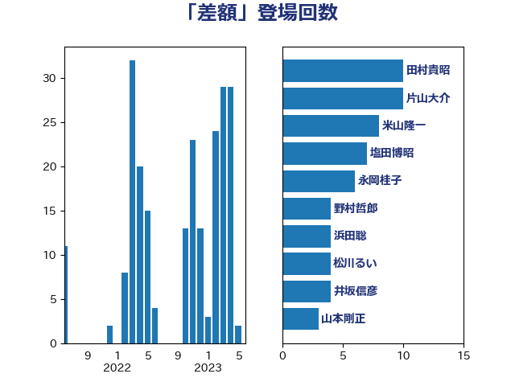

単語「差額」

| 田村貴昭 | 日本共産党 | 10 回 |
| 片山大介 | 日本維新の会 | 10 回 |
| 米山隆一 | 立憲民主党 | 8 回 |
| 塩田博昭 | 公明党 | 7 回 |
| 永岡桂子 | 自由民主党 | 6 回 |
| 野村哲郎 | 自由民主党 | 4 回 |
| 浜田聡 | NHK党 | 4 回 |
| 松川るい | 自由民主党 | 4 回 |
| 井坂信彦 | 立憲民主党 | 4 回 |
| 山本剛正 | 日本維新の会 | 3 回 |
| 大石あきこ | れいわ新選組 | 3 回 |
| 高木かおり | 日本維新の会 | 2 回 |
| 鈴木英敬 | 自由民主党 | 2 回 |
| 鈴木俊一 | 自由民主党 | 2 回 |
| 西村康稔 | 自由民主党 | 2 回 |
| 舞立昇治 | 自由民主党 | 2 回 |
| 紙智子 | 日本共産党 | 2 回 |
| 田中健 | 国民民主党 | 2 回 |
| 瀬戸隆一 | 自由民主党 | 2 回 |
| 浅田均 | 日本維新の会 | 2 回 |
| 櫛渕万里 | れいわ新選組 | 2 回 |
| 徳永エリ | 立憲民主党 | 2 回 |
| 後藤茂之 | 自由民主党 | 2 回 |
| 平林晃 | 公明党 | 2 回 |
| 島村大 | 自由民主党 | 2 回 |
| 小沼巧 | 立憲民主党 | 2 回 |
| 小池晃 | 日本共産党 | 2 回 |
| 小倉將信 | 自由民主党 | 2 回 |
| 宮本徹 | 日本共産党 | 2 回 |
| 安江伸夫 | 公明党 | 2 回 |
| 大塚耕平 | 国民民主党 | 2 回 |
| 塩村あやか | 立憲民主党 | 2 回 |
| 城井崇 | 立憲民主党 | 2 回 |
| 國場幸之助 | 自由民主党 | 2 回 |
| 吉田統彦 | 立憲民主党 | 2 回 |
| 加藤勝信 | 自由民主党 | 2 回 |
| 三ッ林裕巳 | 自由民主党 | 2 回 |
| 青柳仁士 | 日本維新の会 | 1 回 |
| 長浜博行 | 無所属 | 1 回 |
| 鈴木義弘 | 国民民主党 | 1 回 |
| 金子道仁 | 日本維新の会 | 1 回 |
| 野田聖子 | 自由民主党 | 1 回 |
| 谷田川元 | 立憲民主党 | 1 回 |
| 西田実仁 | 公明党 | 1 回 |
| 蓮舫 | 立憲民主党 | 1 回 |
| 若林健太 | 自由民主党 | 1 回 |
| 船橋利実 | 自由民主党 | 1 回 |
| 緒方林太郎 | 無所属 | 1 回 |
| 穀田恵二 | 日本共産党 | 1 回 |
| 石川香織 | 立憲民主党 | 1 回 |
| 田島麻衣子 | 立憲民主党 | 1 回 |
| 牧山ひろえ | 立憲民主党 | 1 回 |
| 源馬謙太郎 | 立憲民主党 | 1 回 |
| 浜田靖一 | 自由民主党 | 1 回 |
| 沢田良 | 日本維新の会 | 1 回 |
| 櫻井周 | 立憲民主党 | 1 回 |
| 柳ヶ瀬裕文 | 日本維新の会 | 1 回 |
| 本田顕子 | 自由民主党 | 1 回 |
| 末松信介 | 自由民主党 | 1 回 |
| 斎藤アレックス | 国民民主党 | 1 回 |
| 斉藤鉄夫 | 公明党 | 1 回 |
| 打越さく良 | 立憲民主党 | 1 回 |
| 岬麻紀 | 日本維新の会 | 1 回 |
| 山田宏 | 自由民主党 | 1 回 |
| 山岡達丸 | 立憲民主党 | 1 回 |
| 小沢雅仁 | 立憲民主党 | 1 回 |
| 大島敦 | 立憲民主党 | 1 回 |
| 前川清成 | 日本維新の会 | 1 回 |
| 倉林明子 | 日本共産党 | 1 回 |
| 伊藤渉 | 公明党 | 1 回 |
| 伊藤孝恵 | 国民民主党 | 1 回 |
| 串田誠一 | 日本維新の会 | 1 回 |
| 中島克仁 | 立憲民主党 | 1 回 |
| 上田清司 | 国民民主党 | 1 回 |